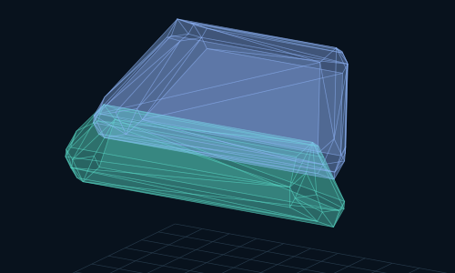
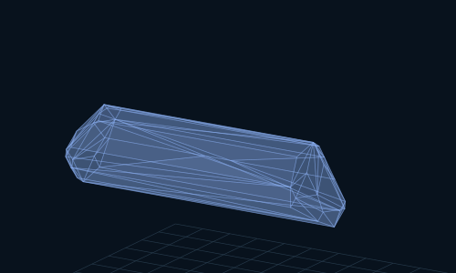
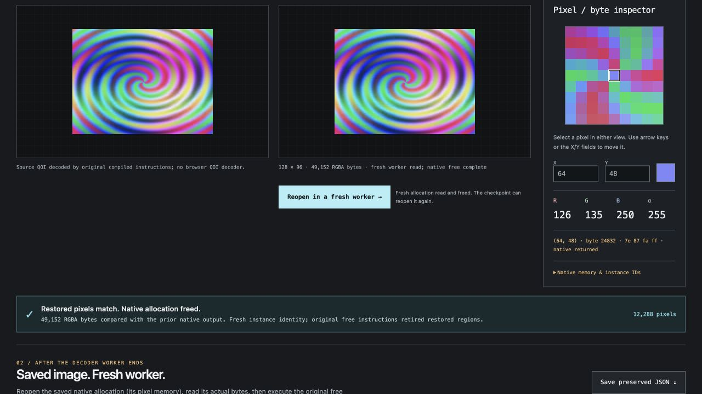

When combining records changes the answer
The best encoding for separated observers can be the worse choice when their quantum records are read together.
Read Quantum RecordsI build geometry tools, systems software, and scientific computing projects.
Solidrift · Geometry debugging
A Blender union drops one of its inputs. Solidrift reduces the recorded failure from 132 triangles to 12, preserving the defect at every accepted step.
Two input solids

Blender returned one

Two-copy quantum measurements
Can joint measurements distinguish quantum states that look identical to whole-block purity tests? An exact two-copy result answers this for a specified eight-qubit problem.
Success probability on the specified discrimination problem. Two total copies for both strategies.
Capsulith · Native code and state
Execute a compiled ARM64 image decoder, retain its pixel allocation, and reopen it in a fresh worker. Inspect the returned bytes, then free the restored native memory.

49,152 RGBA bytes restored and compared.
Quantum measurements, physical models, numerical methods and learning systems. Read the methods alongside their results and limits.

The best encoding for separated observers can be the worse choice when their quantum records are read together.
Read Quantum RecordsA rigid-body simulation tests whether agreement across refinements makes a contact derivative reliable.
Read InertiaForgePositive-moment certificates and growth envelopes, with the derivation and working research draft.
Read the draftExplore the work by problem, discipline or technology. Open a repository for its source, setup and technical detail.
66 public repositories
Reduce a Blender union failure to a smaller case and inspect the geometry behind it.
Chili3D-based browser CAD for modeling plates and brackets, saving locally and exporting STEP or STL.
Set up Codex with reviewed specialist skills, scoped activation and rollback support.
Compile small quantum circuits on a CPU, compare search strategies and check numerical equivalence.
Compare crystal stability models and active-learning choices against existing computed reference data.
Compile small neural classifiers into fixed-point Verilog and inspect recorded FPGA synthesis results.
Reconstruct published ultrasound measurements into volumes; a separate pipeline studies acoustic room mapping.
Run preserved ARM64 code in Node or a browser and inspect its image output and memory.
Solve heat and elasticity problems on a CPU and inspect gradients; its learned reuse policy is disabled.
Find decreasing steps in ideal resistor-ladder converters and calculate exact tolerance bounds.
Compare causal explanations and choose simulated experiments; conclusions depend on the stated assumptions.
Record browser tasks and replay them with outcome checks; export Playwright code or an agent skill.
Turn timed paths into one-motor linkage designs and check modeled clearance through a cycle.
Inspect radio recordings, test interference separation and export signals in SigMF format.
Compare learned and matching decoders for surface-code quantum error correction in a simulator.
Test an alternate return value in a failed Python run, then compare it with the original and an unchanged control.
Add predictions to PostgreSQL data, with snapshot-based refresh jobs and checks for stale results.
Design roller cams from motion cycles, check modeled geometry and export the result.
Reconstruct flight disruptions, forecast network pressure and test recovery scenarios using flight and weather data.
Explore radio-location estimates and test predictions on withheld positions in a simulated signal experiment.
Check error bounds for stored linear equations in Python or a browser; the bounds do not validate the physical model.
Analyze recorded acoustic chirps with a C17 command-line engine and MATLAB research workflows.
Test portfolio strategies with simulated trades, train-only models and an offline research terminal.
Run bounded numerical calculations on encrypted inputs using approximate homomorphic encryption.
Trace U.S. federal contract actions to source records and review possible links between organizations.
Store byte keys and values in Rust with atomic batches, checksummed recovery and a single writer.
Compare saved radiation-transport simulations with learned radiation fields and their uncertainty.
Branch JavaScript and WebAssembly execution at a decision to explore alternate outcomes.
Extract supported ARM64 Mach-O library code into callable artifacts with explicit contracts and bounded memory.
Plan hardware builds with editable parts, wiring diagrams, CAD checks and a reusable Codex skill.
Turn supported measurement questions into signal simulations, analysis procedures and uncertainty estimates.
Investigate kernel performance with numerical checks and CPU timings; its CUDA path remains unverified.
Place labels and frame cameras across motion paths while preserving timing and editable output.
Compare Python code with its Rust transformation using tests and minimized counterexamples.
Repair volunteer schedules around locked commitments and explain remaining coverage gaps.
GitHub profile introducing projects in software, sensing and scientific computing.
Portfolio site for browsing engineering, research and software projects.
Working research draft on exact frequency certificates and growth bounds for a restricted neutrino model.
Fit editable CAD to prealigned scans of supported brackets, enclosures and drilled blocks; export STEP or CadQuery.
Design two-dimensional photonic gratings and inspect simulated fields and spectra.
Replay the same requests against two OpenBao policies and report access changes.
Merge prepared Blender mesh edits and inspect crossings introduced by the combined geometry.
Derive consequences from supported Lean theorems, check their proofs and test their use in later searches.
Simulate order execution with a C++ engine and exact accounting; it does not place live orders.
Infer binary file structure from examples and build standalone editors in a browser.
Compare microscopy TIFF calibration before and after export and save local inspection reports.
Analyze ARM64 behavior, compare edits and export portable C from a local workbench.
Run the same SQLite workload before and after a migration to reveal changed behavior.
Convert files beside their originals from Finder using a macOS menu bar utility.
Carry text annotations across edits when the best alignments agree; flag ambiguous spans for review.
Adapt supported weaving drafts to available pedals and export a pressing sequence.
Map sound sources from microphone-array measurements with beamforming and optional camera overlays.
Edit estimated sound layers locally and export WAV files; trained refinement is experimental.
Write math by hand, check supported steps and practice in a local notebook.
Estimate rare-loss probabilities and inspect finite-budget bounds and a negative-result study.
An MCP Inspector adaptation for checking tool definitions and comparing schemas in a browser or terminal.
Track image-plane vibration in video and inspect motion frequencies locally.
Set a macOS menu bar timer intended to keep a closed MacBook awake; hardware testing is pending.
Fork of AdaCAD, tools for creating and editing weaving drafts with algorithms.
Based on UnstableDesign/AdaCAD
Fork of GitHub’s database of open-source security advisories and CVEs.
Based on github/advisory-database
LOKI-based scanner for known indicators and YARA rules, with a desktop workspace and offline reports.
Based on Neo23x0/Loki
Fork of Binaryen’s JavaScript API for generating and optimizing WebAssembly.
Based on AssemblyScript/binaryen.js
Fork of Fluids, a Python library for fluid dynamics in chemical and mechanical engineering.
Based on CalebBell/fluids
Fork of Meent, a Python package for electromagnetic simulation and optimization.
Based on kc-ml2/meent
Fork of Pattern Projector with work on viewport-outline transforms for sewing patterns.
Based on Pattern-Projector/pattern-projector
Organize internship discovery, reviewed documents and application evidence in a local, macOS-first workspace.
No projects match this combination.